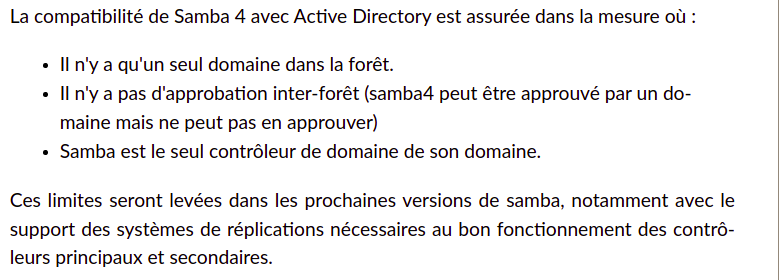
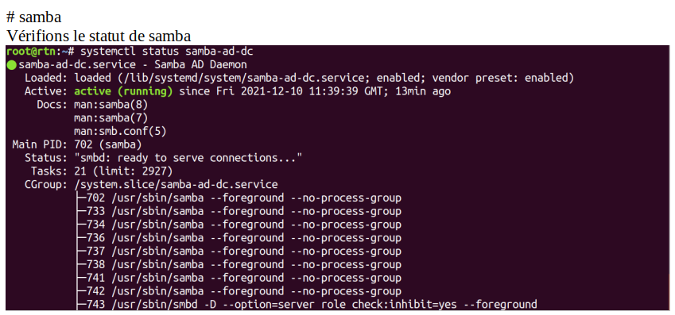
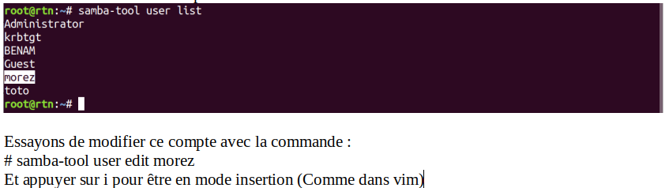
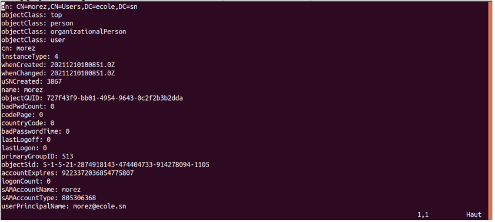
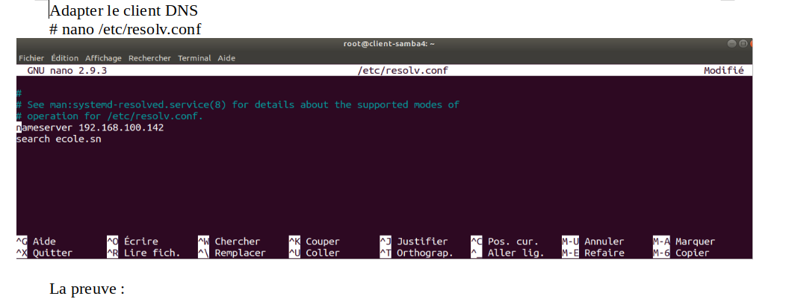
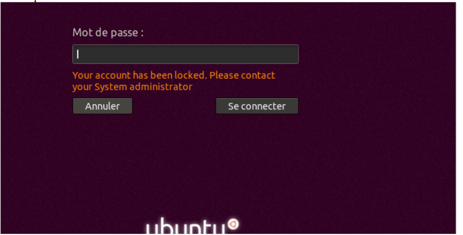
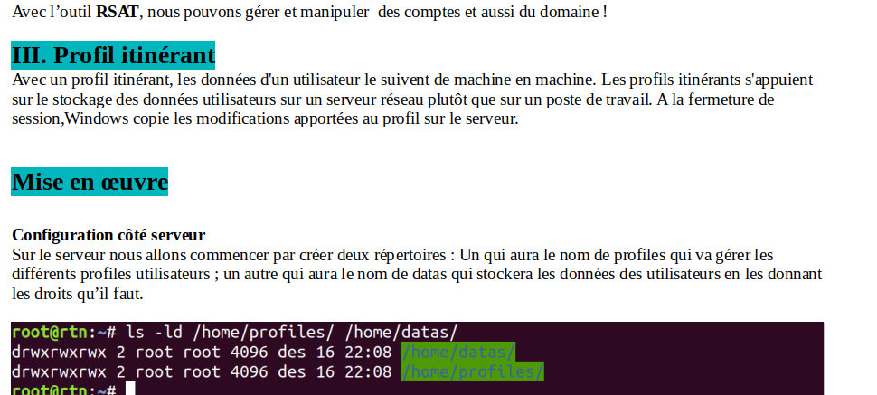
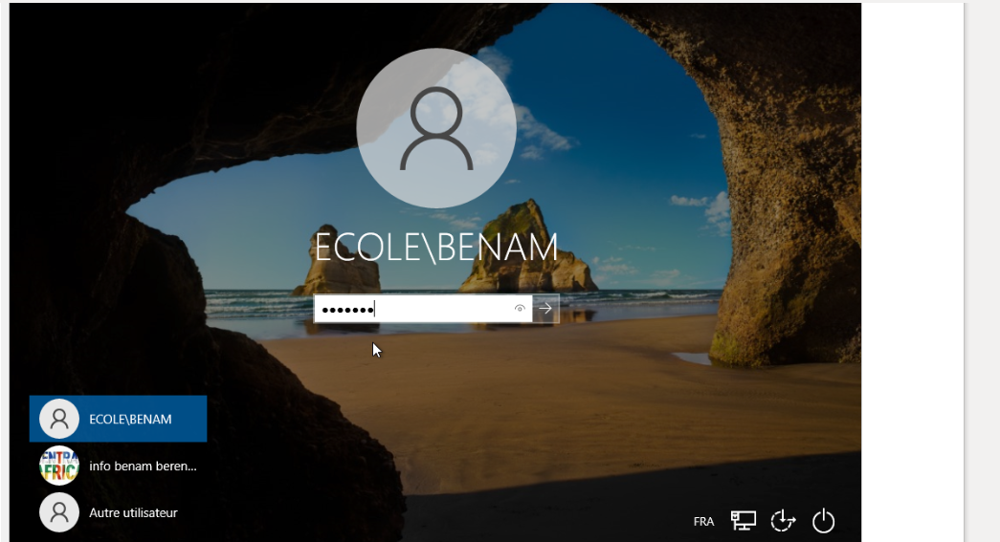
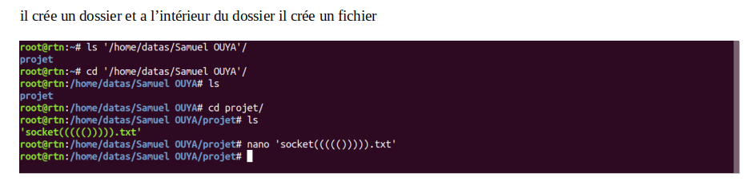
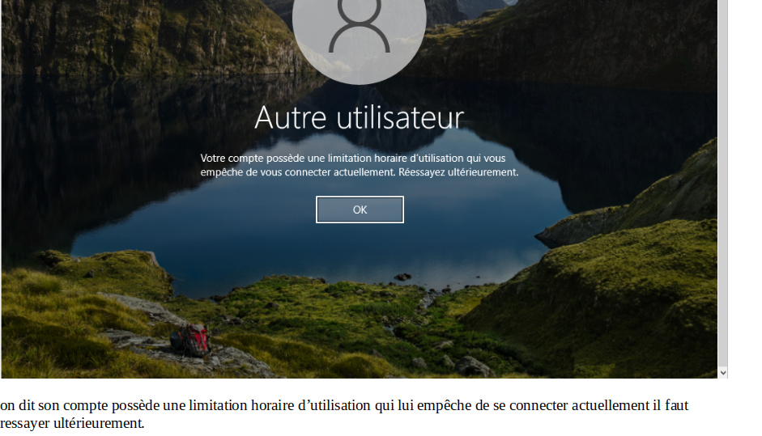

RTN
SERVEUR SAMBA4
Configuration d’un serveur SAMBA sous Linux
Objectifs :
Samba 4 vise à remplacer Samba 3, qui lui, assurait les fonctions d'un domaine de type NT4. Rentrons au cœur des réseaux Active Directory alors que la sortie d'une version se profile à l'horizon. Alors que la branche 3 de Samba peut assurer la fonction de contrôleur de domaine type NT, Samba 4.0 implémente la partie serveur de l'environnement Active Directory utilisé par Windows 2000 et les versions suivantes. Il est donc maintenant possible de joindre un domaine Samba 4 avec toute version de Windows à partir de Windows NT4, et de profiter des fonctionnalités de l'Active Directory correspondantes.
Afin de fournir un ensemble pleinement compatible, cette version inclut sa propre implémentation de serveur LDAP, un serveur Kerberos, un serveur DNS, un serveur RPC, un serveur NTP ainsi qu'un serveur de fichiers basé sur Samba 3.
L'ensemble fonctionne sous un seul service nommé samba.
Il est donc possible d'utiliser Samba 4 pour mettre à disposition des clients Windows, entre autres, des profils itinérants ou des stratégies de groupes.
1 - Preparation De L'Environnement Samba4 :
Sommaire :
- Introduction
- Samba et l'Active Directory
- Les contraintes de l'AD Samba 4
- Administrer Samba 4
- Samba 4 et les GPO
- Samba 4 et le DNS
- Samba 4 et NTP
- Samba 4 et Kerberos
- Samba 4 et LDAP
- Samba 4 n'est pas Samba 3
- La migration depuis Samba 3
- Joindre le domaine
- Configuration Et Installation de Samba4
Conclusion :
Introduction :
Le projet SAMBA est une application réseau permettant des échanges entre un serveur Linux et des stations sous : Windows, OS/2, Mac...
Le serveur Linux se comporte comme un serveur de fichiers capable d'offrir les services habituels sur un réseau :
- partage de fichiers et de répertoires
- partage d'imprimantes
- respect des comptes utilisateurs
- gestion des permissions d'accès.
Pour comprendre le fonctionnement de samba, il faut connaître les bases des réseaux Windows.
NetBIOS est à la base de tout le fonctionnement d'un réseau Microsoft comme le Nommage des machines,Gestion et nommage des groupes de travail ou des domaines,Identification d'un serveur comme contrôleur de domaine ou comme
simple station et aussi le voisinag réseau.Il a été fortement critiqué pour la charge induite sur les réseaux, mais c'est aussi un système puissant et fonctionnel dès lors qu'il est paramétré
avec soin sur un système stable et bien protégé.
NetBIOS, c'est le système de nommage des réseaux SMB (réseaux MS).On peut le comparer grossièrement à DNS pour le nommage internet.Pour identifier les éléments des réseaux Microsoft on utilise
NetBIOS. Sans NetBIOS, pas de partage de fichiers et d'imprimantes, pas de Samba.
Sous Windows, il faut avoir activé soit le client pour les réseaux
Microsoft (qui permet d'inscrire la station dans un domaine), soit le partage de fichiers et d'imprimantes (qui permet de partager des ressources au sein d'un groupe de travail).
Ne pas installer ces services, revient à rendre la machine sourde
et muette sur un réseau SMB TCP/IP.
Sur une machine Unix, il faut installer Samba... avec Samba on installe donc les démons SMBD et NMBD.
La Gestion des Noms Netbios :
elle Permet d’identifier les éléments du réseau (et donc permet le partage de fichiers, imprimantes etc...)
Samba et l'Active Directory
L'Active Directory consiste en une intégration particulièrement poussée d'un certain nombre de protocoles plus ou moins standardisés dans le but de fournir des services d'authentification, de configuration et d'administration (déploiement de logiciels et de configuration) centralisés. Fonctionnellement, c'est une évolution de ce qu'il était déjà possible de faire auparavant, car les principaux objets stockés dans l'Active Directory sont des utilisateurs, des groupes et des ordinateurs. Techniquement, l'évolution apportée par la migration vers de nouveaux protocoles, permet de partitionner les ressources de manière sécurisée, logique, le tout avec un passage à l'échelle plus important, car stocké dans une base de données répliquée, la NTDS pour NT Directory Services.
Alors que la branche 3 de Samba peut assurer la fonction de contrôleur de domaine type NT, Samba 4.0 implémente la partie serveur de l'environnement Active Directory utilisé par Windows 2000 et les versions suivantes. Il est donc maintenant possible de joindre un domaine Samba 4 avec toute version de Windows à partir de Windows NT4, et de profiter des fonctionnalités de l'Active Directory correspondantes.
Afin de fournir un ensemble pleinement compatible, cette version inclut sa propre implémentation de serveur LDAP, un serveur Kerberos, un serveur DNS, un serveur RPC, un serveur NTP ainsi qu'un serveur de fichiers basé sur Samba 3.
L'ensemble fonctionne sous un seul service nommé samba.
Il est donc possible d'utiliser Samba 4 pour mettre à disposition des clients Windows, entre autres, des profils itinérants ou des stratégies de groupes.
Les Contraintes de l'AD Samba 4

Installer Samba 4
ATTENTION :
Avant l’installation de Samba, s’assurer que bind9, openLDAP et dnsmasq ne sont pas installés dessus sur le système car Samba vient avec ses propres composants.
Un Serveur doit avoir une adresse ip Fixer donc on va fixer l’IP du serveur dans le fichier /etc/netplan/01-network-manager-all.yaml
On Applique la configuration en utilisant la commande :
# netplan apply
Puis Redémarrer le service réseau par la commande :
# service networking restart
Donner un nom explicite à la machine :
Faire une résolution de noms dans le fichier hosts comme suit : # vim /etc/hosts
Test de connectivité :
Redémarrer la machine
# reboot
Désactiver les firewalls
# sudo service ufw stop
# service apparmor stop
Configuration de Samba4 Et l'Installation des prérequis :
#apt update ; apt upgrade -y
# sudo apt install samba smbclient winbind libpam-winbind libnss-winbind krb5-kdc
libpam-krb5 krb5-admin-server krb5-config -y
Le nom du serveur Kerberos :
Le nom du serveur administratif :
Configuration Générale de Samba 4 :
Renommer les anciens fichiers de samba et kerberos
# mv /etc/samba/smb.conf /etc/samba/smb.conf.old
# mv /etc/krb5.conf /etc/krb5.conf.old
Approvisionnement du domaine :
S’assurer que Vous n’avez pas de DNS, LDAP et les différents fichiers ci-dessus :
# samba-tool domain provision --use-rfc2307 --interactive
Si tout se passe bien, ça devrait finir par ceci :
Configuration du kerberos en ajoutant une copie du fichier dans /etc
# cp /var/lib/samba/private/krb5.conf /etc/
Désactiver le service qui peut nous poser problème
# systemctl stop systemd-resolved
# systemctl disable systemd-resolved
# unlink /etc/resolv.conf
Puis redémarrer la machine
# reboot
Modifier Le DNS
# /etc/resolv.conf
Rendre disponible les démons qui s’occupent du service :
Masquer les services smbd, nmbd, winbind
Les désactiver








on dit le compte est bloqué, il faut contacter l’administrateur Système !

donc on peut voir son compte en graphique . Et benam va se connecter aussi sur la machine Windows.
II. L’outil RSAT.
installer RSAT sous la machine Windows 10 à l’aide de Powershell.

Ensuite Ouvrir un PowerShell en tant qu’administrateur et exécuter la ligne de commande suivante :
$regPath="Registry::HKEY_LOCAL_MACHINE\SOFTWARE\Microsoft\Windows\CurrentVersion\Policies\
System"; $propertyName="FilterAdministratorToken"; [int]$curValue = 0;
try{ $curValue=[int]::Parse((Get-ItemPropertyValue -Path $regPath -Name $propertyName -ErrorAction
SilentlyContinue));} catch{} if($curValue -lt 1){ Set-ItemProperty -Path $regPath -Name $propertyName
-Value 1}
Puis la commande suivante :
Get-WindowsCapability -Online | Where-Object {$_.Name -like "Rsat*" -AND $_.State -eq "NotPresent"} | Add-WindowsCapability -Online
Choisir utilisateurs et ordinateurs Active Directory et cliquer sur Ajouter puis Ok
Et voici notre domaine ecole.sn et les comptes des users
Nous pouvons même gérer les horaires d’accès d’un compte. Prenons le cas du compte bouki




Sur le serveur on peut voir le fichier que BENAM a crée.
voici le 1er compte :
on précise son mot de passe et le mdp ne s’expire jamais selon l’administrateur BENAM


Son espace de travail n’est pas créer et cette fois-ci il se déconnecte pour laisser l’Admin BENAM attacher son espace de travail a son répertoire respectif .



on voit sur l’écran que votre compte a été désactivé. contactez l’administrateur de votre système.
Cette fois-ci BENAM va activer son compte et il ressaye encore
On va appliquer une stratégie de modification au compte de Morez la prochaine connexion on lui demande de changer son mot de passe .
on lui demande de change son mot de passe et il clique sur Ok